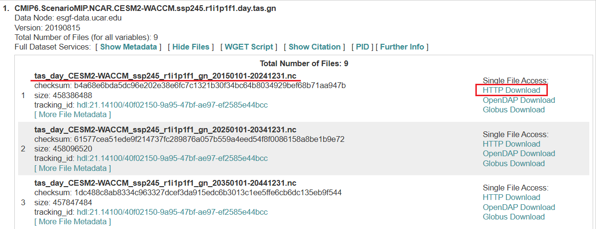
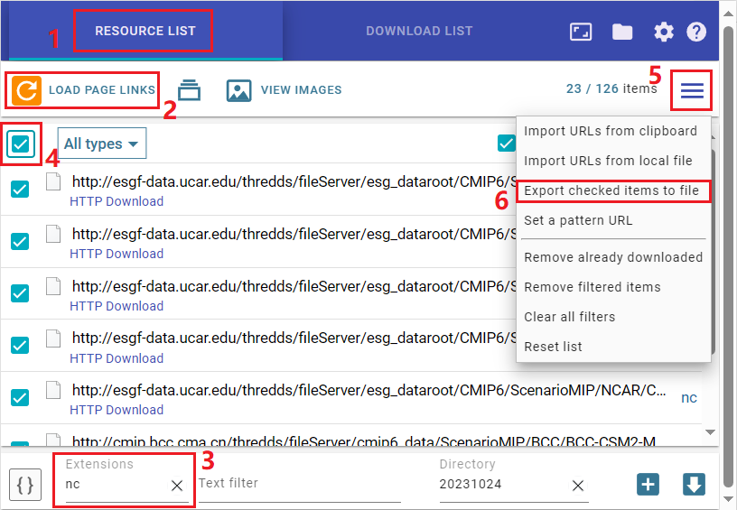
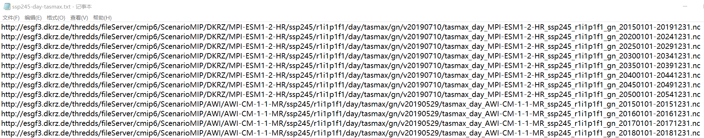

CMIP6数据下载相关
最近的研究有关于CMIP6，其中在数据下载方面有很多需要注意的点，本文将系统性的介绍一下。
数据背景介绍
CMIP6，即第6次国际耦合模式比较计划（Coupled Model Inter-comparison Project, CMIP），是由世界气候研究计划耦合模拟工作组（WGCM）发起和组织。其最初目的是对当时数量有限的全球耦合气候模式的模拟性能进行比较。但此后全球海-气耦合模式进入了快速发展阶段，全球各大气候模拟中心相继发布大量的大气和海洋模拟数据。因此，产生了对这些模拟结果进行系统分析的需求。为适应这一需求，CMIP 逐渐发展成为以“推动模式发展和增进对地球气候系统的科学理解”为目标的庞大计划。
1995年，WGCM 发起和组织了 AMIP 计划，对当时数量有限的全球耦合气候模式的性能进行比较。此后，全球海气耦合模式进入了快速发展阶段，模式数量迅速增加，模式数据爆发式增长。全球各大气候模拟中心相继发布大量的大气和海洋模拟数据，科学界迫切需要有专门的组织对这些模拟结果进行系统的分析。为适应这一需求，CMIP 逐渐发展成为以“推动模式发展和增进对地球气候系统的科学理解”为目标的庞大计划。为了实现该目标，CMIP 在设计气候模式试验标准、制定共享数据格式、制定向全球科学界共享气候模拟数据的机制等方面开展了卓有成效的工作。
WGCM 设立了两个工作小组：一是 CMIP 工作组（CMIP Panel），直接负责 CMIP 的组织协调工作；二是 WGCM 基础设施工作组（Infrastructure Panel），负责制定模式数据共享政策和技术标准。CMIP 试验数据通过地球系统网格联盟（Earth System Grid Federation，ESGF）面向国际科学界提供。
CMIP6 计划介绍：https://pcmdi.llnl.gov/CMIP6/
CMIP6 数据下载地址：https://esgf-node.llnl.gov/search/cmip6/
建议使用英国源：https://esgf-index1.ceda.ac.uk/search/cmip6-ceda/ (2023.11.01更新：现在英国源似乎有问题不让下载，还是走官方地址吧)
数据筛选
CMIP6 各变量及对应缩写介绍：https://clipc-services.ceda.ac.uk/dreq/mipVars.html
可以通过输入关键词搜索自己想要的变量的缩写，或者在官网下载缩写对应表的 excel 文件。

这里对一般情况下，我们用到的检索条件做个简要的介绍
MIP Era：即 MIP 代际数，这里只有一个可选，即最新的 MIP6；
Activity：项目计划；
Product：研究产品，即模型输出，这里依旧是只有一个 model-output 可选；
Source ID：各种评估模式的名称，CMIP6 有 9 个模式来自中国；
Institution ID：各个评估机构的名称；
Source Type：数据源类型，一般是某种大气动力学模型；
Nominal Resolution：空间分辨率，一般有 100km、250km 等；
Experiment ID：研究的实验场景，如历史模拟(historical)，各种 ssp 情景等等；
Sub-Experiment：子实验名称；
Variant Label：变量标签，一般选 r1i1p1f1；
Grid Label：网格标签，一般选 gn，即原始网格；
Table ID：研究的时间尺度代码；
Frequency：研究的时间尺度，如日尺度、月尺度，小时尺度等等；
Realm：数据领域，如 atmos 代表大气；
Variable：研究的变量，如降雨、降雪、均温等等；
CF Standard Name：变量的标准名称；
Data Node：数据节点，即数据来源。
- 其中，ssp 后面的数字含义为共享的社会经济路径 (Shared Socioeconomic Pathways, SSP) + 代表性浓度路径 (Representative Concentration Pathways, RCP)。
- 举例来说，ssp245 指的是在 ssp2 路径下（即“中间路线”世界），温室气体等辐射强迫控制在 $4.5W/m^2$ 的情景
一般来说，选了以上三个检索条件后，就可以点击search了。
在结果中再点击 Source ID，查看有哪些模型符合这个检索条件。需根据实际情况进行调整。
注意：有的时候 search 会显示没有对应文件或者文件失效，这个时候可以把 Show All Replicas 选中再 search 就有文件了。

根据需求筛选好条目之后，点开所有条目的 List Files，可以看到每一个对应文件的文件名、checksum 值、文件大小以及 id 号，还有最重要的下载链接。
1 | 条目命名规则：{MIP_Era}.{Activity}.{Institution_ID}.{Source_ID}.{Experiment_ID}.{Variant_Label}.{Table_ID}.{Variable}.{Grid_Label} |
数据下载
一般来说 CMIP6 的数据都是 .nc 文件，且大多都需要连续下载很多的文件，这时候可以使用两个工具：\
- 第一个是 Simple Mass Downloader，这是一个浏览器插件，可以实现网页内的下载链接的查找与筛选，也可以实现链接的批量下载 \
Microsoft Edge 链接
Google Chrome 链接 - 第二个是 Wget，这个工具可以实现批量下载一个 .txt 文件中的所有下载链接，且具有断点续传功能，非常实用。
在上述筛选和全部条目 List File 步骤完成以后（文件多的条目一定要点击 Show All Files），点击浏览器的 Simple mass downloader 插件，依次执行下图中的6个步骤，即可得到⼀个包含本页所有下载链接的 txt 文件并保存到本地。
 之后使用 Wget 批量下载文件，打开命令行输入指令：
1 | wget -c -i C:/Users/Lenovo/Downloads/ssp245-day-tasmax.txt -P E:/Data/cmip6/ssp245-day-tasmax --no-check-certificate |
其含义是按照 “C:/Users/Lenovo/Downloads/ssp245-day-tasmax.txt” 中的下载链接，将文件下载到文件夹 “E:/Data/cmip6/ssp245-day-tasmax” 中，同时不检查网站证书。
Wget的常用命令可参考：https://hscyber.github.io/posts/a53b1b2b
数据读取与处理
根据给定空间范围/坐标数据提取 nc 文件中的数据到 pickle 文件：
1 | import xarray as xr |
根据 pickle 数据文件，按给定时空条件提取数据到 csv 文件：
1 | import os |
其他相关教程及参考资料
CMIP6 简介与数据工具 ACCCMIP6 介绍：https://zhuanlan.zhihu.com/p/599843527
参考文献：
王磊, 包庆, 何编. CMIP6 高分辨率模式比较计划（HighResMIP）概况与评述[J]. 气候变化研究进展, 2019, 15(5): 498-502.
DOI: 10.12006/j.issn.1673-1719.2019.077
周天军, 邹立维, 陈晓龙. 第六次国际耦合模式比较计划(CMIP6)评述[J]. 气候变化研究进展, 2019, 15(05): 445-456.